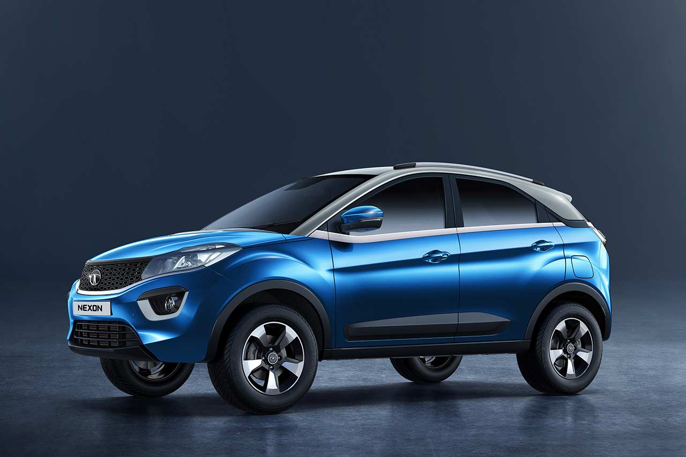

The Tata Nexon has 2 Diesel Engine and 1 Petrol Engine on offer. The Diesel engine is 1497 cc and 1499 cc while the Petrol engine is 1199 cc . It is available with Automatic & Manual transmission.
Depending upon the variant and fuel type the Nexon has a mileage of & Ground clearance of Nexon is 209mm. The Nexon is a 5 seater 4 cylinder car and has length of 3993mm, width of 1811mm and a wheelbase of 2498mm.
-Some key specifications:
City mileage: 18.5
Engine Displacement: 1499
Max Power: 108.5@4000rpm
Seating Capacity: 5
Fuel Type: Diesel
Transmission Type: Automatic
Boot Space: 350l
Service Cost: Rs. 4,447
No. of cylinder: 4
Max Torque (nm@rpm): 260Nm@1500-2750rpm
Fuel Tank Capacity:
Ground Clearance Unladen: 209mm
Turbo Charged:No
For more details you can visit the official website:
